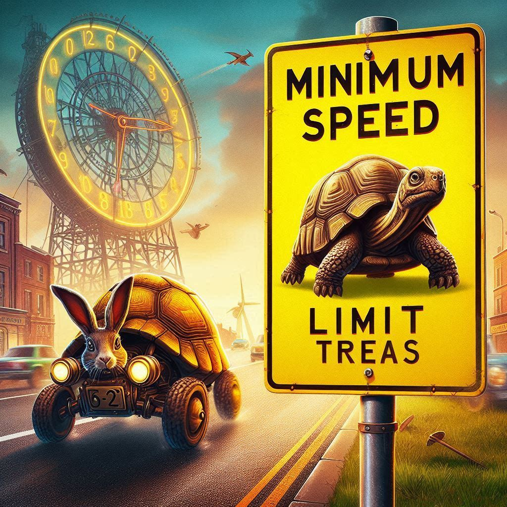

The Myth of the Minimum Speed Limit
Date: 2024-10-04
Author: J Stewart
Home Page

Table of Contents
I'm there for 8 hours
I have a pretty straightforward job as a "parts clerk" in a distribution center. Occasionally, I need to drive a work van from point A to point B, and back again. Since I’m paid by the hour, if a trip takes two hours instead of one, it’s all the better for me. Naturally, I prefer to drive at the slowest legal pace while on the clock.
Does the minimum speed limit exist?
Now, my direct supervisor isn’t exactly the friendliest person, so there’s zero incentive for me to rush back. That got me thinking—there's always talk about maximum speed limits, but what about the minimum? If I cruise 10 mph under the limit on the freeway and stick to side streets at 35 mph, I can stretch my drive, avoid the boss, and buy myself more time before heading back.
Called into the office
Recently, while on one of these leisurely drives, my supervisor checked the van’s GPS. When I returned, he questioned why I was driving only 50 mph on the highway and why I took the slower side streets. I explained that there wasn’t a minimum speed limit. Instead of responding to my point, he just repeated his question, clearly uninterested in hearing my rationale.
A conversation
Apparently, my boss assumed I was afraid to drive the speed limit. Since then, I haven’t been asked to drive the van again. He told me that driving under the speed limit on the freeway was "dangerous," even though the posted limits on my route were 55 and 65 mph, and I was driving at 50. When I’m on the clock with no reason to rush back to stand behind a desk, I drive at what I like to call "the minimum speed limit."
Define speed limit
Where I live, the law only defines a maximum speed limit; there's no official minimum. As long as you're driving at a "reasonable and prudent" speed, you’re good. But according to my supervisor, driving anything less than the maximum speed at all times is somehow "dangerous." He said we had to do everything "as efficiently as possible." Perhaps he had figured out my plan to stretch out the workday.
Final Thoughts
I’m just doing this job until I finish my degree and move on to something better. This isn’t my career peak by any stretch. I live life a quarter mile at a time, and this job is just the latest stretch of road—not the finish line. In the end, I didn’t bother arguing further about the minimum speed limit. My job was already easy, and it’s only gotten easier now that I no longer have to drive and focus on the speed limit.